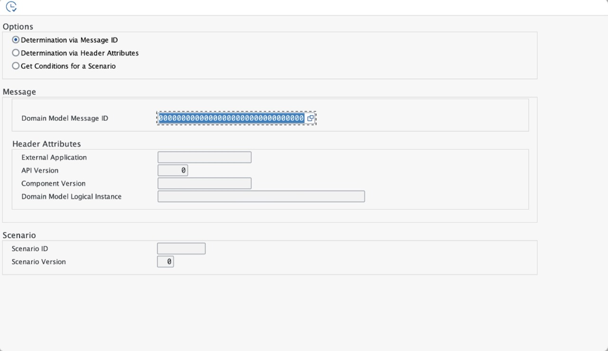
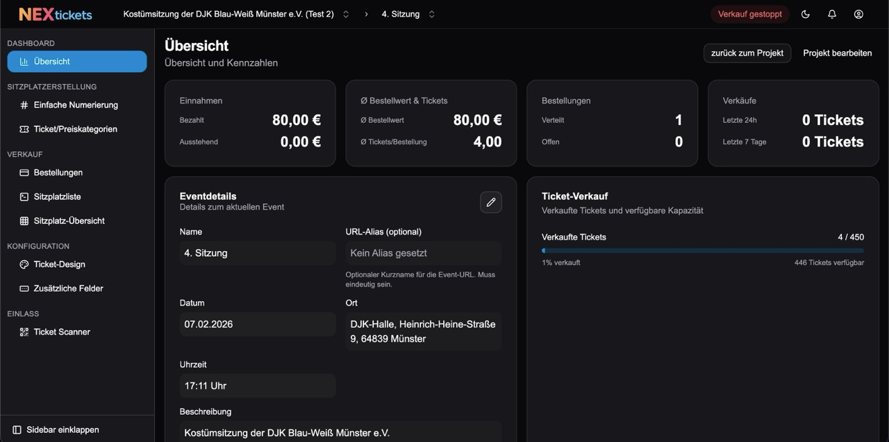

2023 – heute
2020 – 2023

2014 – 2020

2010 – 2014
Ich bin derzeit dualer Student an der DHBW Mannheim in Kooperation mit SAP. Ich bin sehr daran interessiert, Lösungen mit den neuesten Technologien zu entwickeln.
In meiner aktuellen Praxisphase entwickle ich eine VS Code Extension für domänenbasierte Navigation in SAP CAP Projekten.
Die Extension implementiert eine aggregierte Service-Übersicht, um die Navigationskomplexität in großen CAP-Projekten zu reduzieren. Entwickler können damit schneller zwischen zusammengehörigen Artefakten wie Services, Entities und Handlers navigieren.

Meine vierte Praxisphase absolvierte ich in Singapur, wo ich ein SAP Analytics Cloud Planning Dashboard für Projektkostenprognosen entwickelte.
Ich arbeitete mit SAP Business Data Cloud und Datenprodukten, um Echtzeit-Einblicke in Bauprojektkosten zu ermöglichen. Die internationale Erfahrung erweiterte meinen Horizont für globale Geschäftsprozesse.
In meiner dritten Praxisphase habe ich ein optimiertes Datenmodell für SAP Analytics Cloud Just Ask entwickelt, um League of Legends Esports-Daten zu analysieren.
Das Projekt ermöglichte es den Coaches von Team Liquid, komplexe Spielstatistiken über natürlichsprachliche Abfragen abzurufen. Ich wendete die CRISP-DM Methodik für Datentransformation und Modelloptimierung an.
In meiner zweiten Praxisphase habe ich eine bestehende API für die Installation von Datenprodukten erweitert, um CLI-Funktionalität zu unterstützen.
Durch diese Erweiterung können Datenprodukte nun nahtlos über die Kommandozeile installiert werden. Dies verbessert die Developer Experience und ermöglicht die Automatisierung von Installationsprozessen in CI/CD-Pipelines.
In meiner ersten Praxisphase habe ich einen rekursiven Diffing-Algorithmus für Payloads entwickelt, die zwischen SAP und Siemens ausgetauscht werden.
Der Algorithmus ermöglicht einen Versionsvergleich ähnlich der GitHub Diff-Funktionalität. Damit können Änderungen zwischen verschiedenen Versionen von Datenpaketen schnell und übersichtlich identifiziert werden.

Ein Ticketsystem für kleine Vereine und Veranstalter, das den Ticketverkauf und die Verwaltung von Events vereinfacht.
Die Plattform ermöglicht es Veranstaltern, Events zu erstellen, Tickets zu verkaufen und Teilnehmer zu verwalten. Entwickelt mit modernen Webtechnologien für eine optimale Benutzererfahrung.

Ich habe ein Java-Programm entwickelt, das eine Zahlenkombination als Grundlage für eine gültige Lösung innerhalb eines Sudoku-Gitters erstellt!
Zunächst platziert das Programm die Zahlen 1-9 in jedem 3x3-Quadrat. Falls es Duplikate einer Zahl innerhalb einer Zeile oder Spalte gibt, werden Zahlen innerhalb des 3x3-Quadrats getauscht. Dieser Vorgang wird wiederholt, bis keine Duplikate mehr existieren. Die Benutzeroberfläche wurde mit Java Swing entwickelt.
Auf GitHub ansehenIch habe einen Discord-Bot programmiert, der dir antwortet, wenn du ihm einen bestimmten Befehl schreibst!
Das Programm verwendet die discord.py API, die für Discord-Bots wie diesen entwickelt wurde. Der Bot kann dir coole Informationen von anderen APIs liefern. Ich habe ein Level-System programmiert, bei dem du dein eigenes Level sehen kannst, das sich erhöht, je länger du online bist.
Auf GitHub ansehen
Ich habe das alte Snake-Spiel in Java programmiert (du bist eine Schlange in einem Raster und versuchst, einen sehr langen Schwanz zu bekommen, und wenn du einen Apfel isst, wird dein Schwanz länger)!
Das Programm erstellt eine ArrayList für den Schwanz der Schlange. Wenn die Schlange den Apfel isst, wird der ArrayList ein weiteres Element hinzugefügt und die Punktzahl erhöht sich. Wenn die Schlange mit sich selbst oder dem Rand kollidiert, ist das Spiel vorbei. Die Benutzeroberfläche wurde mit Java Swing erstellt.
Auf GitHub ansehen